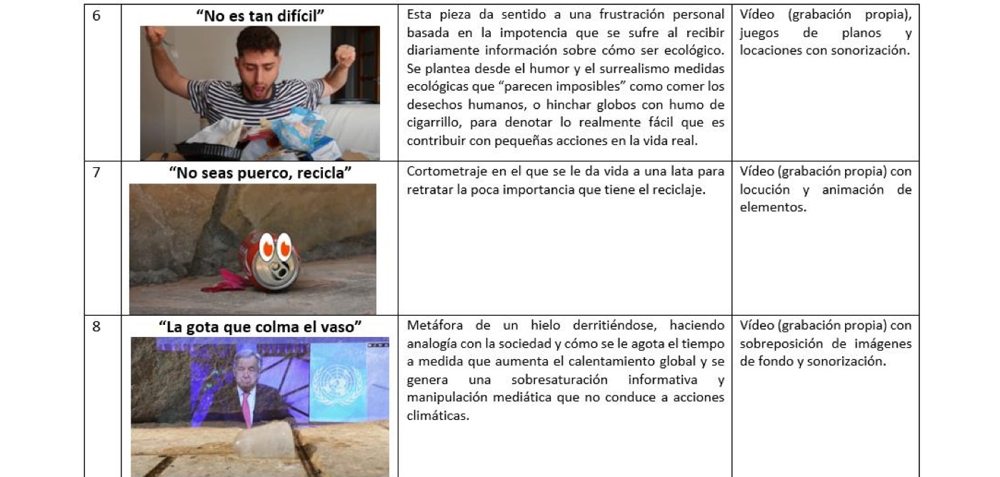

Este texto describe la propuesta pedagógica «Vanguardias cinematográficas del siglo XX como articuladoras de narrativas audiovisuales sobre la crisis climática» y su implementación en el curso 2021-2022 en la asignatura «Creación audiovisual» del grado en Comunicación Audiovisual de la Universidad de Málaga, España. Se expone la estructuración teórica y práctica de los contenidos abordados, así como los proyectos audiovisuales resultantes de su implementación. Apostar por contenidos pedagógicos que promuevan la alfabetización medioambiental y motiven al estudiantado a realizar proyectos prácticos es clave en el actual reto de transición ecosocial.
Ponencias en congresos · 2022
Vanguardias cinematográficas del siglo XX como articuladoras de narrativas audiovisuales sobre la crisis climática. Una propuesta pedagógica
XVI Congreso de la Asociación Latinoamericana de Investigadores de la Comunicación (ALAIC), GT4 Comunicación y Educación. Buenos Aires, Argentina

Resumen
Texto completo disponible próximamente.
← Volver a publicaciones